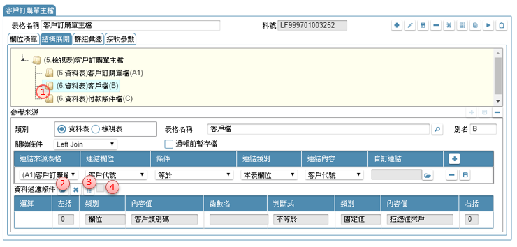
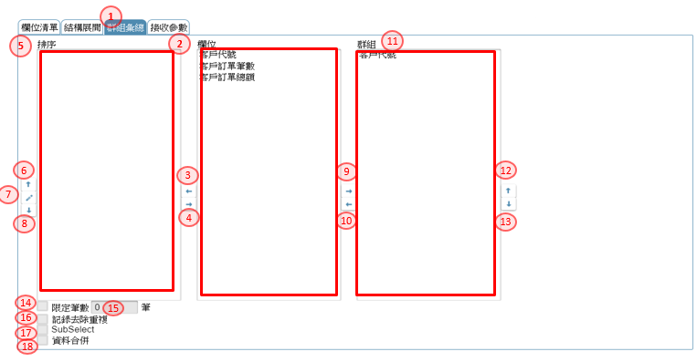

如如-智慧軟體機器人
如如-智慧軟體機器人
IDE操作手冊 8. 檢視表加註
作業目的：定義資料庫裡面的各個檢視表及其包含資料欄位的各項屬性
檢視表包含以下項目：
{#LogicalTable}
8.1 新增檢視表
作業目的：表單的資料來源、表單內欄位的檢控、按鍵執行條件的檢控…等等都有可能使用到檢視表。
參考資料：

- 開啟架構樹下「資料表格」節點，駐留 DB03.檢視表。
- 滑鼠右鍵，彈出選單，點選「新增檢視表」開啟【新增檢視表】頁面，
- 表格名稱：此名稱是SD在專案發展時的資源resource名稱。
- 設定完畢後，按儲存，則此記錄新增完成。
- 新增後，系統會開啟明細畫面進行的細部定義工作。，操作說明如下
宣告新增檢視表後，即可進入檢視表的細部定義工作。也可單擊「DB03.檢視表」節點後彈出【檢視表】頁面

8.2 檢視表工具列

- 新增鍵：新增一個檢視表，在編輯區出現新增檢視表（同8.1)。
- 修改鍵：異動檢視表基本設定。
- 儲存鍵：儲存異動後的設定。
- 刪除鍵：刪除駐留檢視表。
- 檢錯鍵：檢查駐留的檢視表格內容是否符合設定。當有異常時，會提示錯誤內容。
- 表格欄位清單：開啟【表格欄位清單】查詢與檢視表相關的欄位資訊。操作方式請參考［17.5］
- 規格描述：開啟【規格描述】說明及述敘此表格的相關事項。操作方式請參考［6.1.1］
- 打樣測試鍵：點選後，執行檢視打樣的動作，先檢錯->打樣->預覽
- 打樣狀態鍵：點選後，開啟【打樣狀態查詢】就打樣的記錄及產生錯誤的訊息,進行檢查及排除，操作方式請參考［附錄A7］
8.3 結構展開
作業目的：為了描述檢視表中的資料來源及關聯、過濾條件。
8.3.1 設定主表
作業目的：設定檢視表格主要的資料來源。
參考資料：℗文件

- 點選修改鍵，進入編修狀態
- 結構展開：切換到本頁籤。
- 駐留根節點的檢視表名
- 新增鍵：新增檢視表的關連表格。
- 參考來源類別：選擇資料表格或檢視表
- 表格名稱：選擇與本檢視表的主要表格名
- 表格別名：指定本來源的別名，主要表格通常設為為Ａ
- 過帳前暫存檔：來源的資料來源若為同一交易裡, 尚未存回的資料, 則必須特別勾選本欄位
- 儲存鍵：把選定的表格儲回資料庫
8.3.2 設定副表及關連條件
作業目的：設定參與檢視的其它附屬表格,並定義與主表之間的關連條件。
參考資料：
 重複 8.3.1 的1~8 動作, 產生B表
重複 8.3.1 的1~8 動作, 產生B表
- 駐留要設定關聯條件的表格節點
- 檔案關聯條件：顯示定義表格之間關連方式與條件 指定檔案的關聯方式, LEFT JOIN/RIGHT JOIN/CROSS JOIN/FULL JOIN/INNER JOIN/UNION/SUB SELECT
- 連結來源表格：挑選本表與關連的來源表格
- 連結欄位：挑選本表與關連的來源欄位
- 判斷式：判斷式:大於/小於/等於/大於等於/小於等於/不等於
- 連結類別：定義與連結表格的類別 本表欄位/參數/函數/固定值/運算式
- 連結內容：依連結類別設定內容 本表欄位：指定與來源欄位關連的本表欄位 參數：挑選檢視表的參數 函數：挑選系統提供的函數 固定值：填入固定值 運算式：開啟【運算式】設定條件，操作說明請參考［附錄A2］
- 自訂連結：當連結類別＝連結若不是用兩欄位來定義, 可利用自訂義的方式連結
- 新增鍵：將新增的連結條件存回
8.3.3 設定過濾條件及參數
作業目的：在參與檢視的表格, 設定前置的過濾條件,及必要的參數傳遞。
參考資料：

- 駐留要設定過濾條件的表格節點
- 資料過濾條件：可利用本鍵, 開啟【條件式】中, 指定限定符合的條件內容，操作說明請參考［附錄A1］
- 參數鍵：表格須傳遞參數時,可利用本按鈕開【傳遞參數】，操作說明請參考［附錄A4］
- 參數旗標：當關聯的表格需要傳遞參數，則本欄則由勾選資訊表示是否已完成設定。
8.4 欄位清單
8.4.1 新增資料欄位
作業目的：逐一建立或是維護此檢視表內的資料欄位的屬性。
參考資料：

- 點選畫面的[欄位清單]頁籤。
- 新增鍵：點選 + 新增鍵新增檢視表的輸出欄位(data field)。
- 料號：顯示此資料欄位的料號，由平台自動編定之，不可修改
- 欄位名稱：輸入欲輸出的欄位名稱，為SD在規格設計時引用之名。
- 英文命名：輸入欲輸出的欄位英文名稱，即是View 的field name
- 資料型態：挑選型態(data type)=文字/數字(bigint)/數字(int)/數字(smallint)/數字(tinyint)/數字/日期/日期時間/備註/二進位/全唯碼
- 可變長度：指定此資料欄，存入DB時是固定或變動長度；勾選者代表為變動長度。
- Unicode]；設定本欄位是否需要Unicode編碼轉換。若勾選者在輸入不同語系文字時可自動轉換。
- 資料長度：輸入資料欄位的長度；[小數位：若型態為數字, 進階指定小數位數
- 資料解密：當對應來源為資料加密的資料欄位時, 到檢視表時, 進行解密動作
- 資料內容：來源的類別
- 來源參照表格：挑選來源表格，須先[結構展開]中建立
- 來源參照欄位：挑選來源表格的欄位，依據指定的表格挑選可輸出的元件清單
- 運算公式：選擇本項, 表示本欄位的來源是運算合而來
- 運算內容：可利用開窗鍵, 開啟【運算式】設定組合運算式, 作為輸出欄位形成的依據，操作說明請參考［附錄A2］
- 自訂欄位：選擇本項, 表示本欄位為自訂定欄位
- 自訂欄位內容：輸入自訂義的內容
- 預設空值鍵：當選擇自訂欄位時，可利用本鍵依欄位型態預設適當的空值內容
- 特定處理：可將欄位輸出的結果再進階處理, 下拉挑選無/計數(COUNT)/總合(SUM)/最大值(MAX)/最小值(MIN)
- 儲存鍵：設定完畢後，點選本鍵則此資料欄位新增完成
8.4.2 修改資料欄位

- 在元件清單裡，駐留指定要修改的資料欄位名稱。
- 參考 8.4.1 的4~18 動作, 異動欄位內容
- 儲存鍵：修改完畢後，點選本鍵則此資料欄位異動完成
8.4.3 刪除資料欄位
參考資料：℗文件

- 在元件清單裡，駐留指定要刪除的資料欄位名稱。
- 刪除鍵：點選本鍵刪除檢視表的資料欄位(data field)。系統會提示訊息要求再次確認
8.4.4 與其它資料欄位相關

- 規格描述：開啟[【規格描述】](06.html#SpecificationAnnotated)說明及述敘此欄位的相關事項。操作方式請參考［6.1.1］
- 規格描述：開啟【規格描述】說明及述敘此欄位的相關事項。操作方式請參考［6.1.1］
- 同步參考欄位：開啟【同步參考欄位】查詢與資料表相關的欄位資訊。操作方式請參考［17.5.1 同步參考欄位］
- 引用清單：表列所有在[結構展開]中指定的表格其輸出的欄位清單, 可單選或複選(Ctrl+Click)多筆記錄
- 複製鍵：將欄位指定的欄位複製到欄位元件清單
- 重整鍵：重新載入清單內容
8.5 群組彙總
作業目的：為了合計資料、計數、取最大值、取最小值等等運算。
參考資料：℗文件

- 點選畫面的[群組彙總]頁籤。
- 元件清單：顯示本檢視表格所有的欄位；可點選指定
- 排序列入鍵：將駐留在元件清單裡的欄位，設定為排序值；設定後會出現在[排序清單]裡
- 排序取消鍵：將駐留在[排序清單]欄位，取消為排序的設定；設定後會從在[排序清單]裡消失
- 排序清單：顯示所有設定為排序的欄位
- 排序上移鍵：將駐留欄位的排序往上移
- 排序修改鍵：修改排序的方式
- 排序下移鍵：將駐留欄位的排序往下移
- 群組左移鍵：指定駐留欄位做為群組的依據
- 群組右移鍵：取消駐留欄位做為群組的依據
- 群組清單：經選擇指定後的群組清單
- 群組上移鍵：將駐留欄位的群組往上移
- 群組下移鍵：將駐留欄位的群組往下移
- 限定筆數：勾選者，表示當檢視表指定排序後, 可選擇是否限定筆數
- 筆數：當勾選限定筆數時, 輸入筆數
- 記錄去除重複：可設計利用資料庫的特性, 將重複的資料排除
- SubSelect：勾選者，表示本檢視表為僅輸出單一欄位的子檢視表
- 資料合併：勾選者，表示可設計利用資料庫的特性, 將多筆資料行的欄位合併成一個欄位
8.6 接收參數
作業目的：檢視表在執行時,需要動態接收參數來變化資料收集的結果時, 可在本處設定參數內容

- 點選畫面的[接收參數]頁籤。
- 新增鍵：點選 + 新增鍵新增檢視表的參數項目。
- 參數名：輸入本筆資料欄位要預設的內容值。
- 型態：下拉挑選, 型態:文字/數字/日期
- 儲存鍵：設定完畢後，儲存編修後的內容